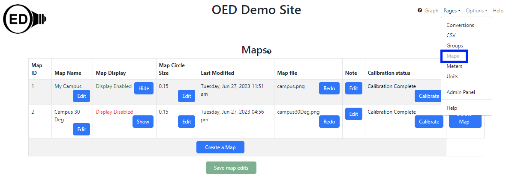

OED Documentation
Map Viewing
Version V1.0.0
Documentation overview
Admin documentation
Information
Site Management
Data Acquisition
Site Installation
User documentation
documentation versions for this page
Current page is V1.0.0.These features are only available to select people who oversee the OED site (called admins) so this information is not usually of interest to a general user.
Overview
The admin map viewing page allows admin users to see and edit all information on maps on an OED site. It is accessed from the "Pages" dropdown menu by clicking "Maps" as shown in the following figure (highlighted in the blue rectangle where "Maps" is grayed out since it has already been clicked). There are two maps at the site and displayed on this page. This page also allows admins to create maps.
Usage
Each column has the following meaning/usage:
- Map ID. This is the internal id used for this map in the database and cannot be changed. It is not usually of interest but given in case there is an issue and OED needs the information to help track it down.
- Map Name. The name displayed and used for selecting this map.
- Map Display. This controls whether regular users can see a map and graph it. If the string is "Display Enabled" in green with the button "Hide" then users can see this map. To reverse this, click the "Hide" button so the string becomes "Display Disabled" in red and the button becomes "Show". Clicking the "Show" button reverses this again so it is visible to all users. A logged in admin can always see all maps. New maps are not displayed by default so the admin needs to do this once the map and associated meters are set up.
- Map Circle Size. This specifies the fraction of the total map size that the largest circle will be that is displayed on a map and currently defaults to 0.15 or 15% of the map size. This generally works well. However, it can be suboptimal if items being placed on the map are close together or you want to have larger circles for viewing. The value should be greater than 0 (zero) and less than 1.
- Last Modified. This gives the date and time of the last time the map was added or calibrated.
- Map file. This is the name of the image file that was used to create this map.
- Note. Any information desired about this map for the records. It is not shown to users.
- Calibration status. Displays "Calibration Complete" if the map has been calibrated and "Calibration Needed" if the map is not calibrated. Clicking the "Calibrate" button allows doing/redoing the calibration. See the admin map creating page for information on map calibration. Maps must be calibrated before they can be used.
- Delete Map. Clicking the "Delete Map" button will remove this map from OED. A popup will appear to confirm you want to remove the map where clicking "OK" removes the map and "Cancel" quits the removal. This column is not easily visible in the figure above.
The "Create a Map" button allows for the creation of a new map for the OED site.
The "Save map edits" button will save all changes made on this page. It will be grayed out and un-clickable until a change is made on the page. It is important to click the "Save map edits" button to save any changes to the database so users will see this change. Note that the first column with the map ID will show "(edited)" if a map has been modified but the changes are not yet saved. Normally OED will warn if there are changes to the page and one attempts to leave the page before saving.
Details
None